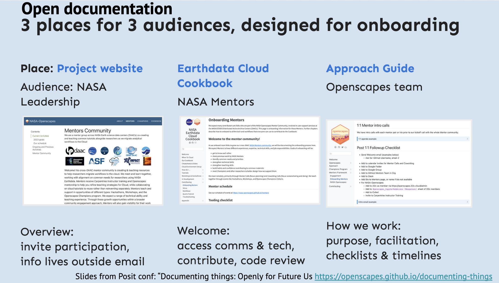

Documentation
Documenting our work and how we work is something we prioritize. If we’re investing time doing something, that time is better spent if more people can access and learn from it (most importantly, Future Us!)
We approach documentation “modularly” like we do with code, so that it is has a place for the right audience and links to other places. This slide from our talk Documenting things: openly for future us (youtube) gives a sense:

Julie aside:
I started documenting to help me first, although I wouldn’t have called it “documentation”. I started writing documentation when I found myself writing the same emails to different people. We developed a team practice using GitHub where when someone emailed, I would paste the question into an Issue, answer there, then respond to their email directing them to that link. I had never posted this kind of thing publicly before (emails feel private!) but through discussions as a team we identified that the content of the question and answer was not private, and posting openly could help more people!
We can build out this page with different ways we do documentation, but a first focus on blog writing.
Blogs
We write a lot of blog posts. They give visibility to things that are otherwise hidden. One example is writing a blog post for a workshop on Audience Building and Strategic Planning. This was a lot of work to put together, and we think it’s valuable for others! In addition to posting the slides, how could we amplify it more and tell a story around those slides that make it more sharable? That’s right, a blog post.
Blog posts take time. A lot of time. And they often feel extra, especially in a culture of needing peer-reviewed publications. But they are super valuable, and important. So, here are some strategies we use to write blogs:
- Reuse structure. Copy-paste a previous blog post structure. Ah, yes, we have the publish date, the title, the authors up top, some italics introducing what this is and who the authors are, with quick links. Then, 3-4 headers with up to 3 paragraphs each and a few pictures. Delete the content but start from there.
- Reuse content. We spend a lot of time planning events and slides - reuse them! Copy text directly from the Agenda docs, and from the slides! Add text to shape the story, but then copy-paste as much as possible. This can be harder with posts that synthesize events (like the 2022 ESIP blog post and upcoming post for 2023). These events require more time to rewatch the recording and synthesize and identify themes, but there is still a lot to be reused, especially quotes!
- Share with co-authors early. But not too early. Often we are trying to do the legwork to get a blog post structured and drafted describing the work they’ve already put into the event or slides. So along with the next point, do this until it’s good enough, and share!
- Be ok with imperfect, and done! Yes, there is more to say if you put months of time into this. And we may find a sentence to be polished after posting, and that’s ok. We aim to share ideas and momentum from our community with the mindset that sharing some and imperfectly is better than silence.
Make our documentation citable
We want to share our documentation in a way that other people can find it, use it, improve it, and cite it. We use the Zenodo repository for this purpose. Every upload to Zenodo is assigned a Digital Object Identifier (DOI), to make it citable and trackable.
This section describes how to get a DOI for a “research related digital artefact” like our online Quarto books. We follow Metadocencia’s How-to Guidance by Yanina Bellini Saibene. It’s clear, has great annotated screenshots, and is also available in Spanish. Here are specifics for us:
Select an open license that makes it clear how people can use the material. The Openscapes Approach Guide license is adapted from The Turing Way license that accommodates works that include both code and documentation.
Store the material in a repository that allows us to publish it, like GitHub. One thing to watch for when making a Release on GitHub is go to
/releasese.g. https://github.com/Openscapes/pathways-to-open-science/releases to create a release because it doesn’t appear on the right of repository page automatically.Add a digital object identifier (DOI) so that it is citable.
Add a “how to cite” section to guide users; here’s how to cite the NASA Earthdata Cloud Cookbook. We like Citing The Turing Way as an example to follow.
TODO: add How to cite section to Lesson Series and Pathways.